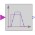

TriggeredTrapezoidTriggered trapezoid generator |

|
Information
This information is part of the Modelica Standard Library maintained by the Modelica Association.
The block TriggeredTrapezoid has a Boolean input and a real output signal and requires the parameters amplitude, rising, falling and offset. The output signal y represents a trapezoidal signal dependent on the input signal u.
The behaviour is as follows: Assume the initial input to be false. In this case, the output will be offset. After a rising edge (i.e., the input changes from false to true), the output is rising during rising to the sum of offset and amplitude. In contrast, after a falling edge (i.e., the input changes from true to false), the output is falling during falling to a value of offset.
Note, that the case of edges before expiration of rising or falling is handled properly.
Parameters (4)
Connectors (2)
| u |
Type: BooleanInput Description: Connector of Boolean input signal |
|
|---|---|---|
| y |
Type: RealOutput Description: Connector of Real output signal |
Used in Examples (2)
|
Modelica.Fluid.Examples
Model of a pumping system for drinking water |
|
|
Modelica.Fluid.Examples.AST_BatchPlant |